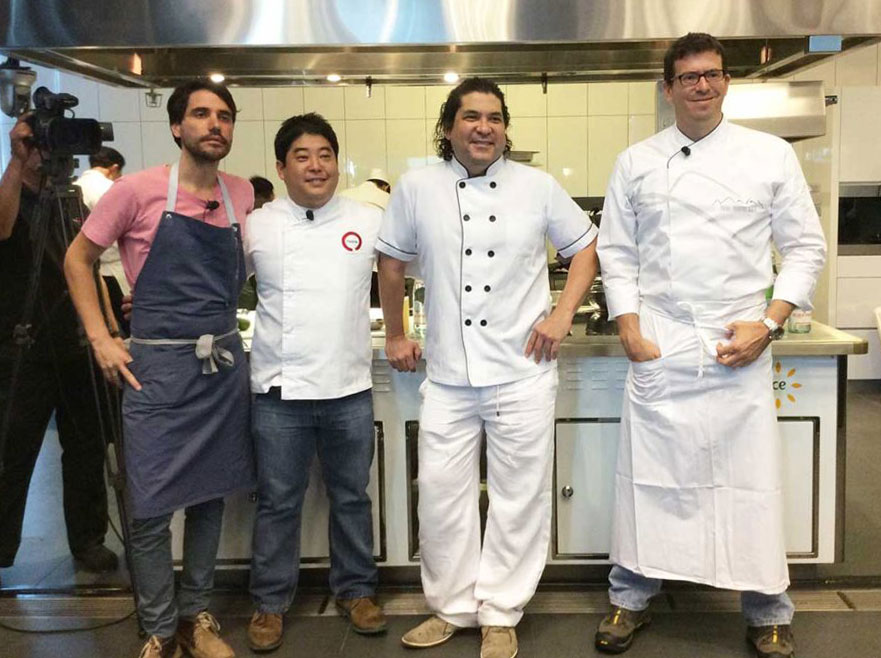
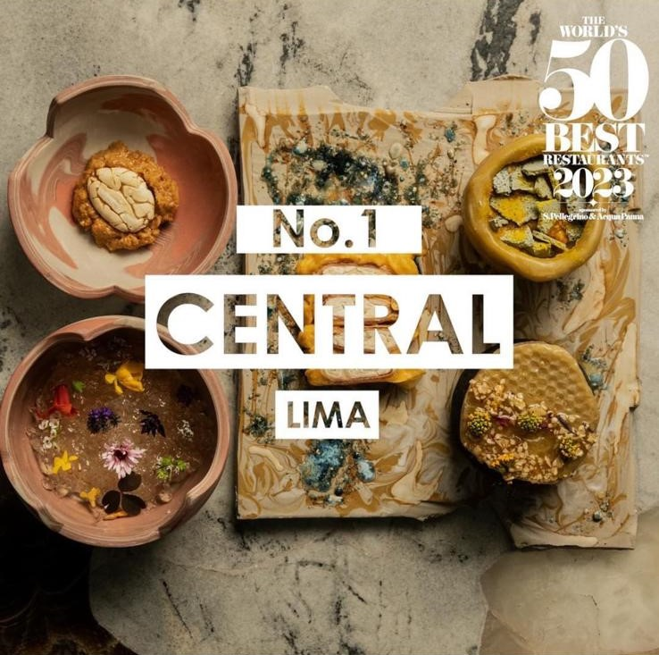
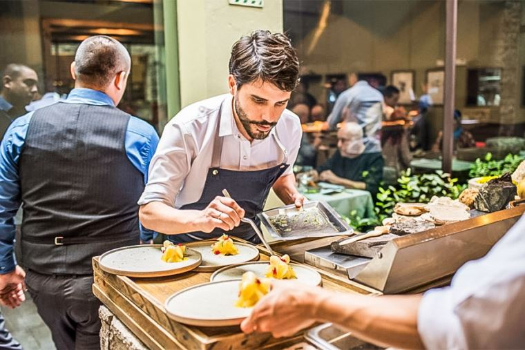
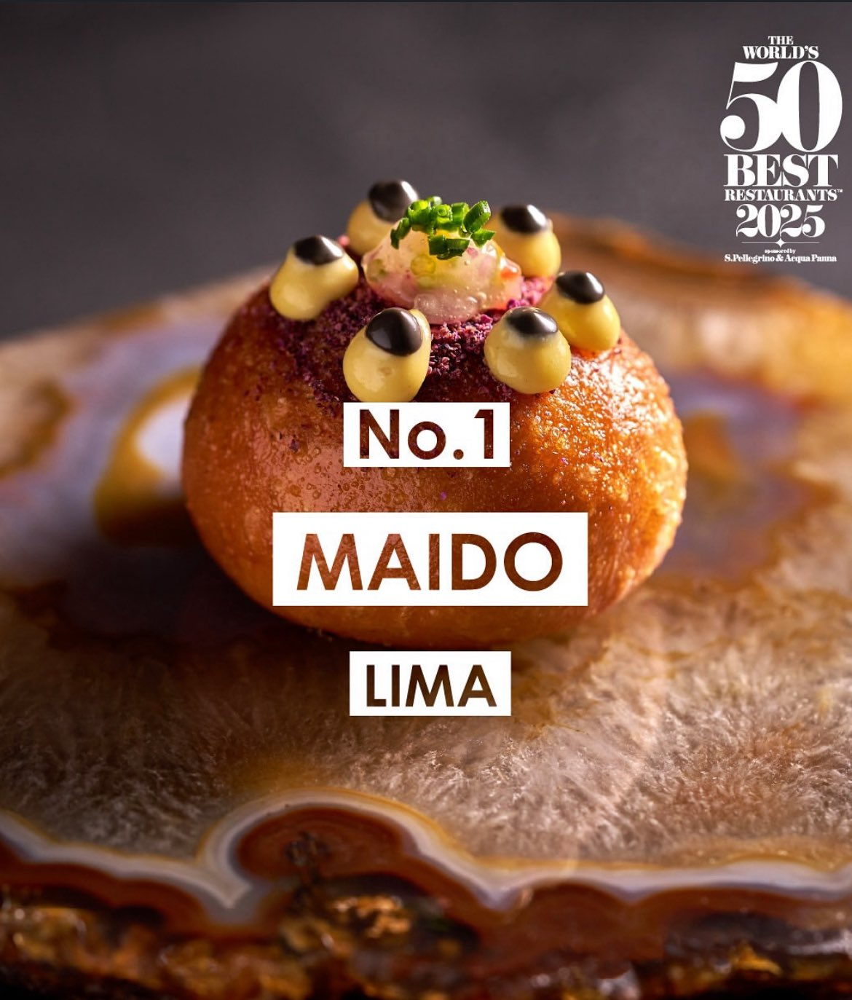
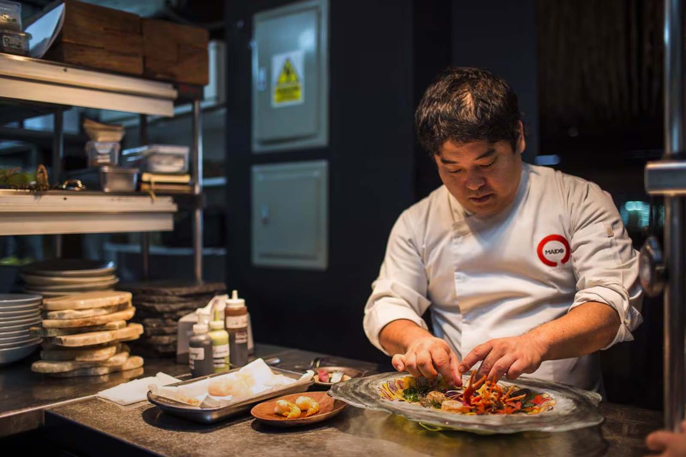

Peruvian Food vs Colombian Food
Why Peruvian Food is the best
Peruvian gastronomy earns its title as the world's best due to the powerful confluence of its unmatched biodiversity and ingredient richness, spanning over 3,000 native potato varieties to Amazonian superfoods like lúcuma, with its profound cultural fusion (culinary mestizaje). This rich historical blending which incorporates indigenous, Spanish, African, Chinese (chifa), and Japanese (nikkei) influences has given rise to an unparalleled variety of iconic dishes such as Ceviche, Lomo Saltado, and Ají de Gallina. Ultimately, the Innovation of World-Class Chefs, like those leading Central and Maido to the top of global rankings, has taken this extraordinary pantry and tradition elevating Peruvian cooking into an award winning art form recognized worldwide.
World Class Chefs
Peruvian chefs have taken gastronomy to another level, innovating without losing their roots. Figures like Gastón Acurio, Virgilio Martínez or Mitsuharu Tsumura, whoses restaurants Central and Maido has been recognized as the best in the world, have consistently placed Peru on the international rankings.
Best restaurants of the World
The achievement of Central and Maido in reaching the number one spot on the prestigious "The World's 50 Best Restaurants" list in consecutive years (Central in 2023 and Maido in 2025) is a monumental milestone that solidifies Lima as the global gastronomic capital.
- Central
- Maido
Central, led by Virgilio Martínez and Pía León, distinguishes itself with its innovative and scientific approach, exploring Peru's ecosystems through its "Mater Elevations" menu, which maps the territory by altitude.
 Maido, under the direction of Mitsuharu "Micha" Tsumura, captivates with its masterful execution of Nikkei cuisine, a sophisticated and harmonious fusion of Japanese techniques with the unparalleled Peruvian pantry and ingredients, thereby demonstrating the breadth and global leadership of Peruvian gastronomy.
 